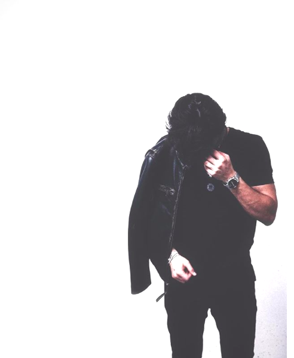
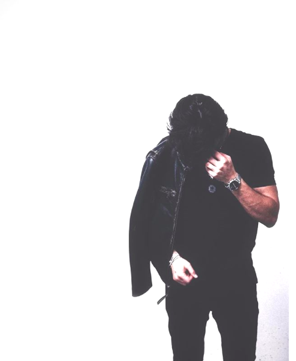

We are located in Williambsburg, Brooklyn. Featuring chocolates from local Brooklyn companies.Our goal is to introduce chocolate to the world by introducing brands and products with a focus on attention to detail, meticulous craftsmanship, groundbreaking innovation and inspirational simplicity. We are selling you an experience and we select each product, guaranteeing excellent taste, satisfaction and customer service.
We make sure our chocolates are sourced from reputable brands who source directly wtih regions around the world, looking for the rarest, complex and delicious cacao available. Our brands pay far beyond commodity and fair trade minimums and has been instrumental in developing new growing regions.
Founder Raksheen Ayaz, has a background in retail and eCommerce buying and planning. She was previously the buyer for chocolates at Macy's, Inc. It was in that position that she realized her true passion for chocolates and her desire to bring and share to the community what Brooklyn's finest startup chocolate companies have to offer. She creted a platform with carefully curated brands and products.

 
